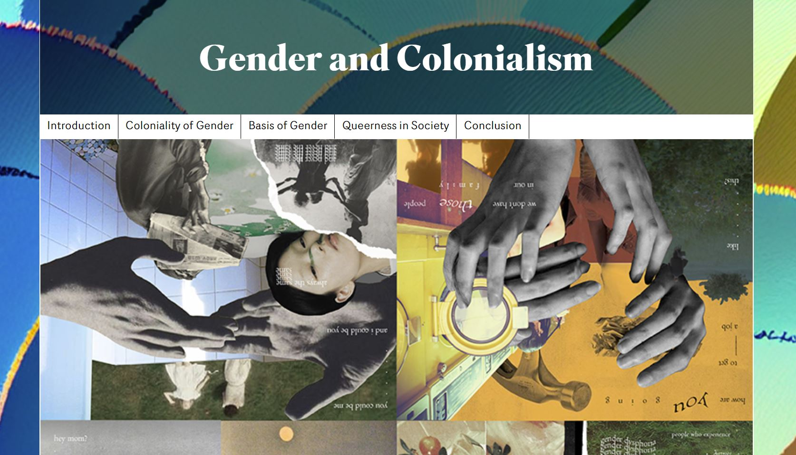

Article Process
It never occurred to me, even when learning HTML tags and such, that the tag name’s primary use was for accessibility. However, now that the article has explained their benefits, it seems obvious on why semantics in HTML are vital. Both for Search Engine Optimization (SEO) and accessibility. Regarding my own article, there are many instances of semantics being used, but also many opportunities where semantics could be used further. Tags such as nav, blockquote, and the array of header tags were all used in the article layout. However, other tags, such as section were overutilized rather than the article and aside tags. The article content is simple to format since it is an essay. As a result, many choices in elements were simple uses of header tags and section tags.
The choices made in styling of the article were meant to benefit readability and usability while still maintaining visual interest. The header at the top is simple, sleek, and right in view upon loading the page. Under it is the image, aiming to pique interest of the reader rather than have it hiding down the page, not visible. Although the image does impede on the ease of access of the article, the header counteracts the lack of written content on the first load. The centering of content also allows for less searching of content, especially when reading. Overall, the most challenging part of styling the article was finding a balance between readability and usability, without sacrificing the general look of the article.